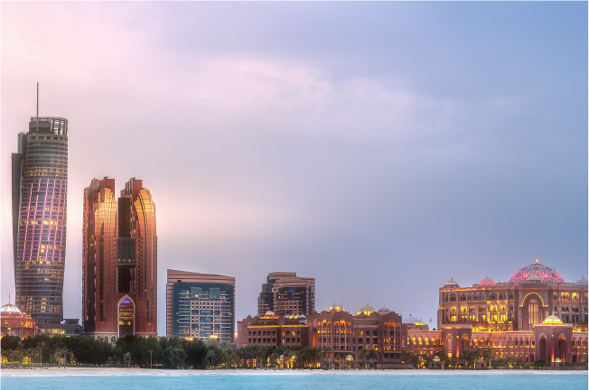
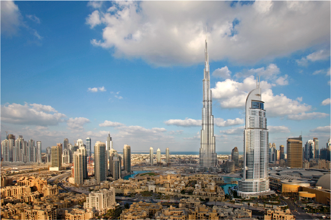
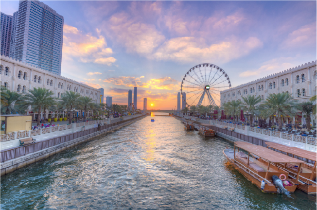
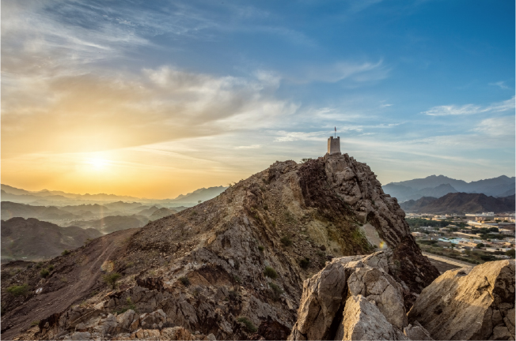
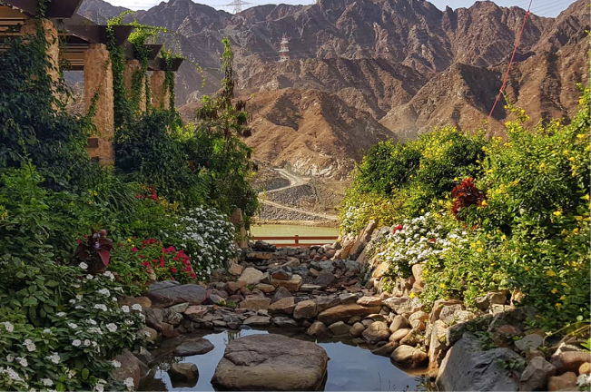

Capital
Abu Dhabi
Abu Dhabi is the federal capital of the UAE and the largest of the seven emirates. It comprises three major regions and cities: Abu Dhabi, Al Ain and Al Dhafra. The Emirate of Abu Dhabi accounts for 85% of the total area of the UAE, and it’s one of the top safest cities in the world. The emirate has achieved an unprecedented economic growth in the past fifty years.
To see Tourist Places of Abu Dhabi

Emirates of
Dubai
Dubai is globally known for its high-quality advanced infrastructure. In earlier times, Dubai used to be famous for fishing, pearl diving and simple agricultural activities. Today, it has emerged as a global trade hub and a major destination on the global tourism map. It gained its global reputation as the ‘City of Gold’, thanks to the booming global gold trade over the past decades.
To see Tourist Places of Dubai

Emirates of
Sharjah
Sharjah is the third largest emirate in the UAE, and it is home to vast deserts, beaches and key archaeological sites that spread across the city. Sharjah was crowned the 'Capital of Islamic Culture' and 'Unique and Distinguished Tourist Destination'. It was also named the ‘Cultural Capital of the Arab world’ by UNESCO. Several places in the emirate overlook the Eastern Coast of the Gulf of Oman.
To see Tourist Places of Sharjah

Emirates of
Ajman
Ajman is situated on the coast of the Arabian Gulf and comprises Manama and Masfout cities, which are surrounded by the captivating Hajar mountain ranges. The emirate boasts many archaeological areas dating back to prehistoric times, as well as several historical archaeological forts. Ajman is known for its diverse natural landscapes of beaches, mountains and valleys.
To see Tourist Places of Ajman

Emirates of
Umm Al Quwain
Umm Al Quwain has its name derived from the phrase Umm Al Quwatain, which refers to its ‘two powers’ of richness of activities on land and water. Today, it is home to major archaeological sites and mangroves that stretch over more than seven kilometres. Al Seniah Island is one of the emirate’s largest islands, hosting a natural reserve for migratory birds in the relatively warm winter.
To see Tourist Places of Umm al Quwain

Emirates of
Ras Al Khaimah
The Emirate of Ras Al Khaimah is characterised by its captivating natural sceneries, sprawling deserts and towering mountain ranges. It is home to prominent archaeological sites dating back to the third millennium BC. It includes Jebel Jais, the highest mountain in the UAE, and extended palm plantations, and provides an authentic reflection of Arab traditions and heritage. The city offers diverse recreational activities as well.
To see Tourist Places of Ras Al Khaimah

Emirates of
Fujairah
Fujairah is distinguished by its rugged landscape surrounded by Al Hajar Mountains, and hosts a sandy 70-km coastline overlooking captivating sceneries. The emirate receives visitors throughout the year due to its relatively low temperatures during the summer.
To see Tourist Places of Fujairah

.jpeg)